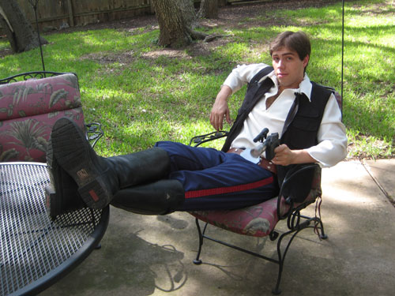
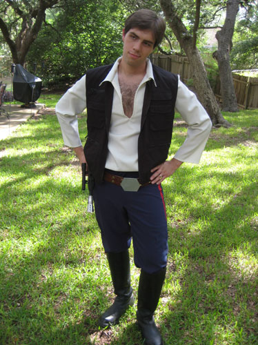
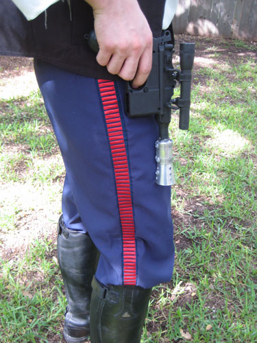

This costume was a made my husband Gunnar to wear to the 2007 Comic Con in San Diego! I was actually in Japan at the time,
but Gunnar says that Lavar Burton complimented him on it when he went up to get Mr. Burton's autograph. My main resource for making this costume was
The Padawan's Guide, an amazing resource for all Star Wars
costumes. There's honestly not much I can add to their tutorial on making a Han Solo costume!
The pants were my first pair of real hand made pants, made from an impossibly difficult vogue pattern which I subsequently threw away. I bought the bloodstripe
here and sewed them into the sides of the pants. The shirt was my first shirt with a placket and a collar, and looking
back I am not very happy with it. I've since learned how to make pro style plackets and collars!
The belt, blaster, and boots were all provided by John. He bought the boots at a tack shop and uses them for all his jedi costumes.
They are
Mountain Horse High Rider II in men's black. He
made the belt from leather and then dyed and riveted it together with a piece of aluminum for the buckle. The blaster is
reconstructed from an air-soft gun, a mag-lite flashlight, and various bits of pipe fittings from Home Depot, then spray painted black.
Pictures



Back to Costume Gallery